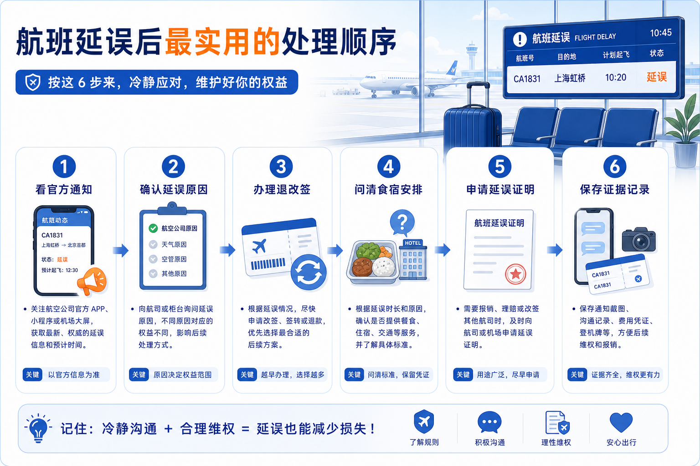

每次一遇到航班延误，机场里最常见的两句话就是：“到底几点飞？”“这个能赔吗？”
说实话，很多人一遇到延误，第一反应就盯着赔偿。可真正最容易耽误事的，往往不是赔偿没谈下来，而是你该拿到的信息没拿到、该办的退改没及时办、该开的证明没开。
而且还有一个很容易被忽略的事实：不是所有延误，航空公司都一定要赔。
- 很多争执不是因为你没道理，而是因为你一开始没有抓对重点。
- 补偿、服务保障、退改签权益是三件事，混在一起最容易越吵越乱。
- 真正更值钱的，往往是信息和处理顺序，而不是最后那一句“赔不赔”。
赔偿是结果项，信息、退改签、食宿、证明，才是处理延误时真正的先手。
一、不是所有延误都有赔偿
很多人默认认为，只要飞机延误，航空公司就该赔钱。可按民航局公开信息，航空公司是否对航班延误进行补偿，补偿的条件、标准和方式，通常写在各自的运输总条件里，并不是全国所有航司都按同一个金额、同一套规则执行。
这意味着“延误了有没有补偿”，本来就是一件要看航司规则、也要看延误原因的事。
所以真正更实用的顺序不是一上来追着问“赔多少”，而是先把下面几件事确认清楚：延误原因是什么、有没有正式通知、这张票现在怎么退怎么改、是否有餐食或住宿安排、要不要开延误或取消证明。
二、旅客真正最常用的6项权益，其实是这几类
如果把航班延误后的常见权益拆开来看，大多数旅客真正会用到的，基本就是六类：知情权、退改签、餐食住宿、延误证明、机上延误保障，以及出现争议后的进一步确认。
这六类里，有的是一发生延误就应该立刻得到的，比如信息通知；有的是看原因和规则来处理的，比如退改签和补偿；也有的是很多人平时想不到，但真要报销、理赔或维权时非常关键的，比如延误证明。

三、知情权：延误时先确认官方通知
航班一旦出现不正常情况，旅客首先拥有的，是被及时告知的权利。根据民航局发布的航空旅行常识，航空公司在掌握航班状态发生变化之后，应在30分钟内通过公共信息平台、官网、呼叫中心、短信、电话、广播等方式，及时、准确地发布航班延误或者取消信息，包括原因和航班动态。
机场也应通过候机楼公共平台及时通告；如果你是通过代理渠道买的票，代理方在接到航空公司通知后，也应及时通知你。
延误时第一件事，不是到处问小道消息，而是确认官方通知。
四、退改签和食宿，不是所有情况都按同一套处理
延误后能不能免费改、能不能签转，不是统一答案。如果是航司自身原因，通常可免费改期或签转；如果是天气、空管等非航司原因，则多半按票规处理，不能一概而论。
食宿也是同样逻辑。航司原因通常应提供餐食或住宿；非航司原因更多是协助安排，费用边界不同。 真正更实用的问法是：这次属于哪类原因、我这张票怎么改、有没有食宿安排、费用谁承担。

五、延误证明：很多后续问题都靠它
很多后续问题都靠一份延误证明。 报销、理赔、向单位说明，通常都要它，所以延误或取消后，记得及时向承运人要书面证明。
如果你觉得证明内容不对，可以再通过 `12326` 申请原因确认。更重要的是把票面、通知、截图和证明一起留完整，后面会省很多事。
六、机上延误时，你也有明确保障
人已经上了飞机但迟迟不起飞时，也不是只能干等。机上延误后，承运人应当每30分钟通告一次航班动态，不是一句“再等等”就结束。
同时记住两个关键节点：超过2小时应提供饮用水和食品；超过3小时且仍无明确起飞时间时，在符合安全规定前提下，应安排旅客下飞机等待。

七、延误后最实用的处理顺序，就是这6步
如果你下次真的遇到延误，最建议按这个顺序来：先看通知，再办退改，再问食宿，再开证明，再留证据。
- 先看官方通知。 确认航班有没有正式延误或取消信息，以及原因是什么。
- 再问退改签。 别只问能不能改，要问清楚是免费改期、签转，还是按票规处理。
- 再问食宿安排。 尤其是晚间延误、跨夜和异地经停时，这一步很关键。
- 需要就开证明。 报销、理赔、请假、后续沟通，很多时候都靠它。
- 把证据留全。 票面、短信、截图、广播通知、沟通记录，都别丢。
- 如果人在机上，盯住关键节点。 30分钟动态、2小时水食、3小时无明确起飞时间。

💬 你有没有遇到过特别崩溃的一次航班延误？欢迎在评论区分享👇
💬 有乘机问题，评论区留言，我挑典型问题写文章解答！
✈️ 祝你每次飞行都顺利！
本文依据中国民用航空局公开《航空旅行常识》《航班正常管理规定》及《航班延误取消原因确认工作程序》整理。不同航空公司在补偿标准、具体客票处理和服务细节上可能存在差异，具体请以当次航班所属航空公司实时规则和客服答复为准。